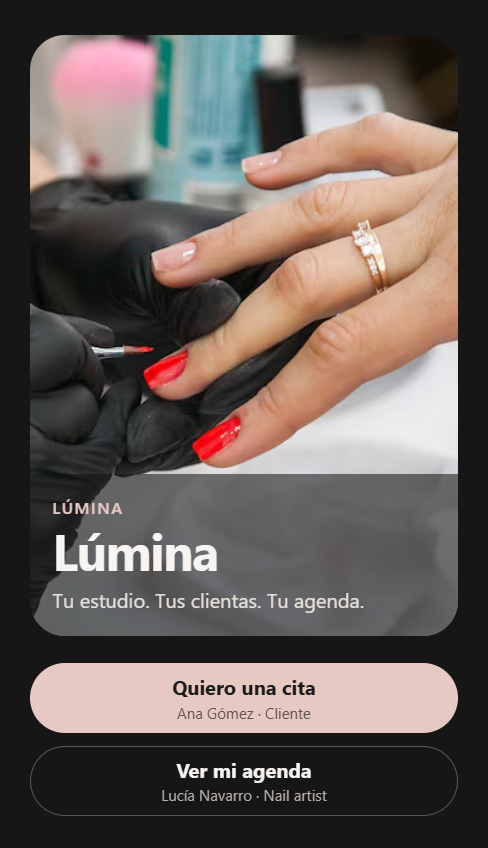

Lectura de unos cinco minutos
Cómo está armada Lúmina
Lúmina es un estudio de uñas con dos roles. Ana Gómez reserva un servicio. Lucía Navarro ve esa cita y la mueve de estado. La app es React Native con Expo. La API es Hono sobre SQLite. Los escenarios viven en Gherkin y cada uno tiene un flujo de Maestro.
Diagrama
El cliente y la profesional usan la misma app. El rol llega en el login y decide la ruta: catálogo o agenda. Maestro no habla con la API. Abre la app, toca la pantalla y comprueba el texto. La API se reinicia aparte, con POST /dev/reset, para que cada escenario empiece en la misma agenda.
Librerías
| Pieza | Para qué |
|---|---|
| Expo 57 y React Native 0.86 | La app móvil. En esta entrega también corre en web con react-native-web. |
| expo-router | Rutas de acceso, catálogo, reserva, citas y agenda. |
| Hono y @hono/node-server | HTTP en el puerto 8787. |
| SQLite de Node 22 | Una sola base, api/data/lumina.sqlite, recreada al arrancar. |
| Zod 3 | Valida el cuerpo y los query params antes de tocar el dominio. |
| Effect 3 | El programa de negocio: errores con etiqueta, transacción y el acceso a la base. |
| Maestro | Un YAML por escenario de Gherkin. El id de la app es com.lumina.booking. |
Flujo de la cliente
Ana entra con el botón “Quiero una cita”. El catálogo pide GET /services. Al abrir un servicio, GET /calendar devuelve los próximos seis días hábiles y GET /availability marca cada media hora. El estudio abre de lunes a sábado, de 10:00 a 18:00, hora de Ciudad de México. Un hueco está ocupado si se cruza con otra cita que no esté cancelada. Confirmar hace POST /appointments. Si alguien ya tomó ese intervalo, la API responde 409. Si entra, la cita nace pendiente y Ana la ve en “Mis citas”. Desde ahí puede cancelarla.

Flujo de la profesional
Lucía entra con “Ver mi agenda”. GET /appointments le devuelve todas las citas, no solo las suyas de clienta. La pantalla las parte en Por confirmar, Confirmadas e Historial. Confirmar, completar y cancelar son PATCH /appointments/:id. Pendiente puede pasar a confirmada o cancelada. Confirmada puede pasar a completada o cancelada. Completada y cancelada ya no se mueven. Una clienta no puede confirmar: la API responde 403.
Patrones
Zod en la frontera. El HTTP traduce JSON a un objeto revisado. Si el correo no tiene forma de correo, o el día no es una fecha, la petición muere en 400 y el dominio no se entera.
Effect para el fallo esperado. Correo desconocido, cita ajena, horario ocupado y transición ilegal son errores con etiqueta. El adaptador HTTP los convierte en 401, 403, 409 o 400. Un fallo inesperado cae en 500.
Una transacción por reserva. Crear la cita y comprobar el cruce ocurren dentro de BEGIN IMMEDIATE. Dos reservas del mismo hueco no pueden colarse juntas.
Semilla relativa. Las citas de demostración no tienen una fecha fija. Se calculan a partir de mañana, saltando el domingo. Por eso los flujos dicen “el primer día hábil” y no “el 6 de octubre”.
Gherkin y Maestro, uno a uno. docs/escenarios.feature nombra el comportamiento. docs/qa-maestro.md dice cómo reiniciar la base y cómo lanzar scripts/e2e.ps1. Cada escenario tiene un YAML en maestro/ que busca los mismos textos y los mismos testID.
Qué se ejecutó
Las pruebas de la API, con npm test en api/, cubren el correo desconocido, la reserva del hueco libre, el choque con la cita de Sofía, las transiciones de estado y el reinicio que invalida la sesión. Los doce flujos de Maestro están escritos. En esta máquina no está instalado el CLI de Maestro ni hay un emulador con el build com.lumina.booking, así que esas capturas salen de recorrer los mismos pasos en Expo web. La guía QA explica la corrida real en un dispositivo.